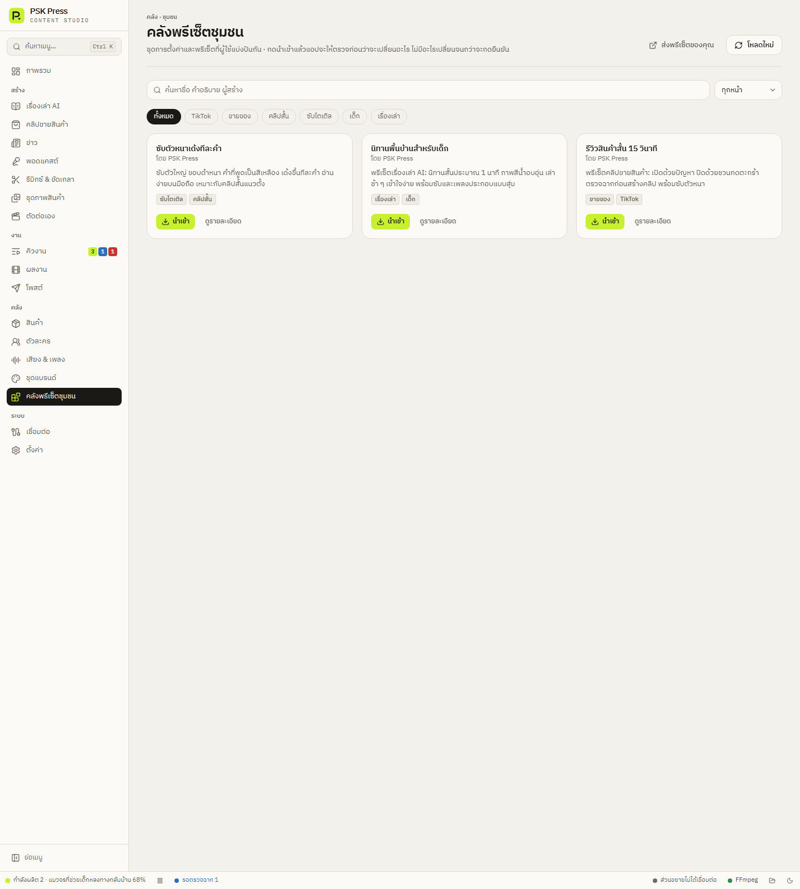
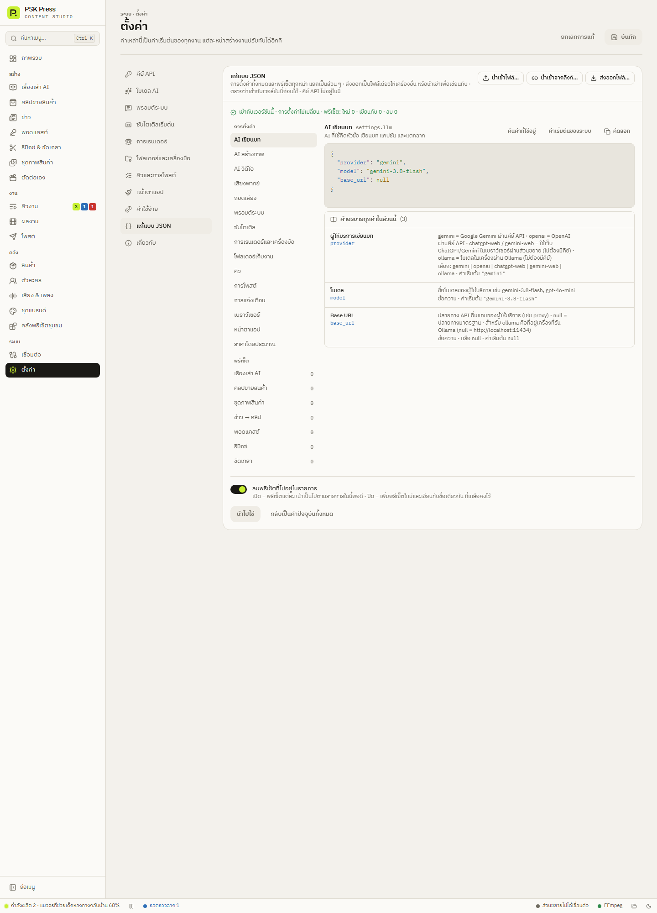

คลัง
คลังพรีเซ็ตชุมชนและแชร์การตั้งค่า
นำเข้าพรีเซ็ตและสไตล์ที่คนอื่นแบ่งปันในคลิกเดียว ส่งออกการตั้งค่าของคุณให้เครื่องอื่นหรือเพื่อนร่วมทีม และแก้การตั้งค่าทั้งหมดแบบ JSON
คลังพรีเซ็ตชุมชน
ที่ คลัง → คลังพรีเซ็ตชุมชน มีชุดการตั้งค่าและพรีเซ็ตที่ผู้ใช้แบ่งปันกัน เช่น สไตล์ซับไตเติล พรีเซ็ตเรื่องเล่า หรือพรีเซ็ตคลิปขายสินค้า ค้นหาด้วยชื่อ กรองด้วยแท็กหรือหน้าที่ใช้ได้


- กด ดูรายละเอียด เพื่อดูว่าชุดนี้เปลี่ยนอะไรบ้าง
- กด นำเข้า — แอปจะพาไปหน้า ตั้งค่า → แก้แบบ JSON พร้อมโหลดชุดนั้นมาให้ตรวจ
- ดูสรุปด้านบน (เข้ากับเวอร์ชันนี้ · จะเปลี่ยนการตั้งค่ากี่ค่า · พรีเซ็ตใหม่กี่ชุด) แล้วกด นำไปใช้ เมื่อพอใจ — ไม่มีอะไรเปลี่ยนจนกว่าจะกดยืนยัน
ชุดที่ต้องใช้แอปเวอร์ชันใหม่กว่าจะแสดงแต่กดนำเข้าไม่ได้ อัปเดตแอปก่อน · ถ้าเปิดหน้าไม่ได้ ตรวจอินเทอร์เน็ตแล้วกด ลองใหม่
แก้การตั้งค่าทั้งหมดแบบ JSON
ที่ ตั้งค่า → แก้แบบ JSON การตั้งค่าทุกอย่างและพรีเซ็ตทุกหน้าแสดงเป็นข้อความ JSON แยกเป็นส่วน ๆ (AI เขียนบท ซับไตเติล การเรนเดอร์ … และพรีเซ็ตของแต่ละหน้า) มีสีช่วยอ่าน


- ใต้ช่องแก้มี คำอธิบายทุกค่าในส่วนนี้: ชื่อ ความหมาย ค่าที่ใส่ได้ และค่าเริ่มต้น พร้อมปุ่ม ใช้ค่าเริ่มต้น ทีละค่า
- ค่าเริ่มต้นของระบบ ใส่ค่าเริ่มต้นของแอปทั้งส่วน · คืนค่าที่ใช้อยู่ กลับเป็นค่าที่ใช้อยู่ตอนนี้
- ส่วนพรีเซ็ตมีปุ่ม เพิ่มพรีเซ็ต ที่สร้างพรีเซ็ตใหม่จากฟอร์มเริ่มต้นของหน้านั้น
- แอปตรวจทุกค่าก่อนใช้ ค่าที่ผิดจะขึ้นจุดแดงที่ส่วนนั้นพร้อมบอกเหตุผล และกด นำไปใช้ ไม่ได้จนกว่าจะแก้
ส่งออกและนำเข้า
ส่งออกให้เครื่องอื่นหรือแจกจ่าย
- ในหน้า ตั้งค่า → แก้แบบ JSON กด ส่งออกไฟล์…
- เลือกเฉพาะส่วนที่จะส่งออก เช่น แค่ ซับไตเติล หรือแค่พรีเซ็ตหน้า เรื่องเล่า AI
- เปิด ตัดค่าเฉพาะเครื่องออก ไว้เมื่อจะแจกจ่าย — ตัดตำแหน่งไฟล์ โปรไฟล์ Chrome และแชต Telegram ออกให้ (คีย์ API ไม่อยู่ในไฟล์อยู่แล้ว)
- ใส่ชื่อชุด ผู้สร้าง คำอธิบาย และแท็ก แล้วกด บันทึกไฟล์… หรือ คัดลอก JSON เพื่อวางในแชต
นำเข้า
- นำเข้าไฟล์… — เลือกไฟล์ .json
- นำเข้าจากลิงก์… — วางลิงก์ https ของไฟล์ .json หรือลิงก์
psk-press://import?url=… - กดลิงก์
psk-press://import?url=…จากเว็บหรือแชต แอปจะเปิดขึ้นมาพร้อมโหลดชุดนั้นให้ตรวจ
หลังโหลด ด้านบนจะแสดงชื่อชุด ผู้สร้าง และที่มา พรีเซ็ตของหน้าที่ชุดนั้นมีจะรวมกับของเดิม (ชื่อซ้ำจะถูกเขียนทับ) ตรวจแล้วกด นำไปใช้
ส่งพรีเซ็ตของคุณเข้าคลัง
ส่งออกแบบแจกจ่าย (ตัดค่าเฉพาะเครื่องออก) แล้วทำตาม วิธีส่งพรีเซ็ตเข้าคลังชุมชน ห้ามมีข้อมูลส่วนตัว และใช้เฉพาะเนื้อหาที่คุณมีสิทธิ์